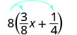
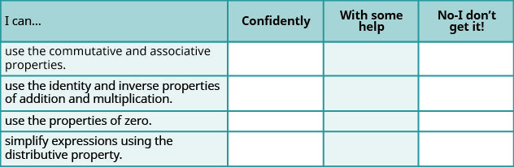

સરવાળા અને ગુણાકાર માટે તટસ્થ સંખ્યા તથા વિરોધી અને વ્યસ્ત સંખ્યાના ગુણધર્મો વાપરવા
શૂન્યના ગુણધર્મો વાપરવા
વિભાજનનો ગુણધર્મ વાપરી પદાવલીનું સાદું રૂપ આપવું
આ વિભાગના વિષયોનો વધુ વિગતવાર પરિચય પૂર્વબીજગણિત પુસ્તકના આ પ્રકરણમાં મળે છે: વાસ્તવિક સંખ્યાઓના ગુણધર્મો.
ક્રમવિનિમય અને જૂથબંધીના ગુણધર્મો વાપરો
બે સંખ્યાઓ, જેમ કે 5 અને 3, ઉમેરવાનો વિચાર કરો. તેમને કયા ક્રમમાં ઉમેરીએ તેની પરિણામ પર અસર થતી નથી, ખરું ને?
પરિણામો સરખાં છે.
આપણે જોઈએ છીએ કે સરવાળો કરવાના ક્રમથી પરિણામ બદલાતું નથી!
ગુણાકારમાં પણ આ જ તપાસીએ:
અહીં પણ પરિણામો સરખાં છે!
ગુણાકાર કરવાના ક્રમથી પરિણામ બદલાતું નથી!
આ ઉદાહરણો સમજાવે છે ક્રમવિનિમયનો ગુણધર્મ. સરવાળો કે ગુણાકાર કરતી વખતે ક્રમ બદલવાથી પણ પરિણામ સરખું મળે છે.
ક્રમવિનિમયનો ગુણધર્મ
સરવાળો કે ગુણાકાર કરતી વખતે બદલીએ ક્રમ તો પણ પરિણામ સરખું મળે છે.
ક્રમવિનિમયનો ગુણધર્મ ક્રમ સાથે સંબંધિત છે. સરવાળો કે ગુણાકાર કરતી વખતે સંખ્યાઓનો ક્રમ બદલીએ તો પણ પરિણામ સરખું મળે છે.
બાદબાકી વિશે શું કહી શકાય? શું તેમાં સંખ્યાઓનો ક્રમ મહત્ત્વનો છે? શું આ પદાવલી અને બંને માટે પરિણામ સરખું મળે છે?
પરિણામો સરખાં નથી.
બાદબાકીનો ક્રમ બદલતાં પરિણામ સરખું ન મળ્યું. તેથી આપણે જાણીએ છીએ કે બાદબાકીમાં ક્રમવિનિમયનો ગુણધર્મ લાગુ પડતો નથી.
બે સંખ્યાઓના ભાગાકારમાં શું થાય છે તે જોઈએ. શું ભાગાકાર માં ક્રમવિનિમયનો ગુણધર્મ લાગુ પડે છે?
પરિણામો સરખાં નથી.
ભાગાકારનો ક્રમ બદલતાં પરિણામ સરખું ન મળ્યું. તેથી ભાગાકારમાં ક્રમવિનિમયનો ગુણધર્મ લાગુ પડતો નથી. ક્રમવિનિમયના ગુણધર્મો માત્ર સરવાળા અને ગુણાકારને લાગુ પડે છે!
સરવાળા અને ગુણાકારમાં લાગુ પડે છે ક્રમવિનિમયનો ગુણધર્મ.
બાદબાકી અને ભાગાકારમાં લાગુ પડતો નથી ક્રમવિનિમયનો ગુણધર્મ.
તમને આ પદાવલીનું સાદું રૂપ આપવાનું કહેવામાં આવે તો કેવી રીતે કરશો અને તમારો જવાબ શું હશે?
કેટલાક લોકો પહેલાં વિચારે અને પછી બીજા લોકો આથી શરૂઆત કરે: અને પછી
બંને રીતે પરિણામ સરખું મળે છે. યાદ રાખો: કઈ ક્રિયા પહેલાં કરવી તે દર્શાવવા આપણે જૂથ બનાવતાં કૌંસ વાપરીએ છીએ.
ઉમેરો .
સરવાળો કરો.
ઉમેરો .
સરવાળો કરો.
ત્રણ સંખ્યાઓનો સરવાળો કરતી વખતે જૂથબંધી બદલીએ તો પણ પરિણામ સરખું મળે છે.
ગુણાકાર માટે પણ આ સાચું છે.
ગુણાકાર કરો.
ગુણાકાર કરો.
ગુણાકાર કરો. .
ગુણાકાર કરો.
ત્રણ સંખ્યાઓનો ગુણાકાર કરતી વખતે જૂથબંધી બદલીએ તો પણ પરિણામ સરખું મળે છે.
તમે કદાચ આ જાણતા હશો, પરંતુ તેના માટેનો શબ્દપ્રયોગ નવો હોઈ શકે. આ ઉદાહરણો સમજાવે છે જૂથબંધીનો ગુણધર્મ.
જૂથબંધીનો ગુણધર્મ
સરવાળો કે ગુણાકાર કરતી વખતે બદલીએ જૂથબંધી તો પણ પરિણામ સરખું મળે છે.
ફરી આ ગુણાકાર વિશે વિચારીએ: બંને રીતે સરખું પરિણામ મળ્યું, પણ કઈ રીત વધુ સરળ હતી? આ ગુણાકાર અને પહેલાં કરવાથી, ઉપર જમણે બતાવ્યા પ્રમાણે, પહેલા જ પગલામાં અપૂર્ણાંક દૂર થાય છે. જૂથબંધીનો ગુણધર્મ ગણતરી સરળ બનાવી શકે છે!
આ જૂથબંધીનો ગુણધર્મ જૂથ બનાવવા સાથે સંબંધિત છે. સંખ્યાઓનાં જૂથ બનાવવાની રીત બદલીએ તો પણ પરિણામ સરખું રહે છે. ધ્યાન આપો: એ જ ત્રણ સંખ્યાઓ એ જ ક્રમમાં છે; માત્ર જૂથબંધી બદલાઈ છે.
આપણે જોયું કે બાદબાકી અને ભાગાકારમાં ક્રમવિનિમયનો ગુણધર્મ લાગુ પડતો નથી. તેમાં જૂથબંધીનો ગુણધર્મ પણ લાગુ પડતો નથી.
પદાવલીનું સાદું રૂપ આપતી વખતે કયાં પગલાં લેવાં તે પહેલાં વિચારવું સારું છે. આગળના ઉદાહરણમાં સજાતીય પદોને જોડવા સરવાળાના ક્રમવિનિમયના ગુણધર્મથી સજાતીય પદો એકબીજાની પાસે લખીશું.
સાદું રૂપ આપો:
ઉકેલ
સરવાળાનો ક્રમવિનિમયનો ગુણધર્મ વાપરી સજાતીય પદો એકબીજાની પાસે આવે તેમ ક્રમ બદલો.
સજાતીય પદો ઉમેરો.
સાદું રૂપ આપો:
સાદું રૂપ આપો:
જ્યારે બીજગણિતીય પદાવલીનું સાદું રૂપ આપવાનું હોય, ત્યારે સીધા ક્રિયાઓના ક્રમ પ્રમાણે આગળ વધવાને બદલે પહેલાં ક્રમવિનિમય કે જૂથબંધીનો ગુણધર્મ વાપરવાથી ઘણી વાર કામ સરળ બને છે. અપૂર્ણાંકોના સરવાળા કે બાદબાકીમાં સામાન્ય છેદ ધરાવતા અપૂર્ણાંકોને પહેલાં ભેગા કરો.
સાદું રૂપ આપો:
ઉકેલ
છેલ્લાં 2 પદોના છેદ સમાન છે, એટલે જૂથબંધી બદલો.
પહેલાં કૌંસની અંદર સરવાળો કરો.
અપૂર્ણાંકનું સાદું રૂપ આપો.
સરવાળો કરો.
અશુદ્ધ અપૂર્ણાંકમાં ફેરવો.
સાદું રૂપ આપો:
સાદું રૂપ આપો:
જૂથબંધીનો ગુણધર્મ વાપરી સાદું રૂપ આપો:
ઉકેલ
જૂથબંધી બદલો.
કૌંસની અંદર ગુણાકાર કરો.
ધ્યાન આપો કે આપણે ગુણાકાર કરી શકીએ છીએ: પરંતુ 3નેx વડે ગુણવાનું સંખ્યાત્મક પરિણામ મેળવવા પહેલાં આ ચલની કિંમત જાણવી પડે: x.
જૂથબંધીનો ગુણધર્મ વાપરી સાદું રૂપ આપો: 8(4x).
32x
જૂથબંધીનો ગુણધર્મ વાપરી સાદું રૂપ આપો:
સરવાળા અને ગુણાકાર માટે તટસ્થ સંખ્યા તથા વિરોધી અને વ્યસ્ત સંખ્યાના ગુણધર્મો વાપરો
કોઈ સંખ્યામાં 0 ઉમેરીએ તો શું થાય? 0 ઉમેરવાથી સંખ્યાની કિંમત બદલાતી નથી. તેથી 0ને કહીએ છીએ સરવાળા માટેની તટસ્થ સંખ્યા.
ઉદાહરણ તરીકે,
આ ઉદાહરણો સમજાવે છે સરવાળા માટે તટસ્થ સંખ્યાનો ગુણધર્મ કહે છે કે કોઈ પણ વાસ્તવિક સંખ્યા અને
કોઈ સંખ્યાને એક વડે ગુણીએ તો શું થાય? 1 વડે ગુણવાથી કિંમત બદલાતી નથી. તેથી 1ને કહીએ છીએ ગુણાકાર માટેની તટસ્થ સંખ્યા.
ઉદાહરણ તરીકે,
આ ઉદાહરણો સમજાવે છે ગુણાકાર માટે તટસ્થ સંખ્યાનો ગુણધર્મ કહે છે કે કોઈ પણ વાસ્તવિક સંખ્યા અને
તટસ્થ સંખ્યાના ગુણધર્મોનો સાર નીચે આપ્યો છે.
તટસ્થ સંખ્યાનો ગુણધર્મ
આકૃતિની પહેલી લીટીમાં પ્રશ્ન છે: “5માં કઈ સંખ્યા ઉમેરવાથી સરવાળાની તટસ્થ સંખ્યા 0 મળે?” નીચે 5 વત્તા ખાલી જગ્યા બરાબર 0 છે. પછી લખ્યું છે: “આપણે જાણીએ છીએ કે 5 વત્તા −5 બરાબર 0.” આગળ પ્રશ્ન છે: “−6માં કઈ સંખ્યા ઉમેરવાથી સરવાળાની તટસ્થ સંખ્યા 0 મળે?” નીચે −6 વત્તા ખાલી જગ્યા બરાબર 0 છે. પછી લખ્યું છે: “આપણે જાણીએ છીએ કે −6 વત્તા 6 બરાબર 0.”
ધ્યાન આપો કે દરેક કિસ્સામાં ખૂટતી સંખ્યા આપેલી સંખ્યાની વિરોધી સંખ્યા હતી!
ને સરવાળા માટેની વિરોધી સંખ્યા કહીએ છીએ આ સંખ્યાની: a. કોઈ સંખ્યાની વિરોધી સંખ્યા એ તેની સરવાળા માટેની વિરોધી સંખ્યા છે. સંખ્યા અને તેની વિરોધી સંખ્યાનો સરવાળો શૂન્ય થાય છે, જે સરવાળા માટેની તટસ્થ સંખ્યા છે. આથી સરવાળામાં વિરોધી સંખ્યાનો ગુણધર્મ મળે છે; કોઈ પણ વાસ્તવિક સંખ્યા માટે યાદ રાખો: સંખ્યા અને તેની વિરોધી સંખ્યાનો સરવાળો શૂન્ય થાય છે.
કઈ સંખ્યાનો સાથે ગુણાકાર કરતાં ગુણાકાર માટેની તટસ્થ સંખ્યા 1 મળે? બીજા શબ્દોમાં, ને શેનાથી ગુણતાં 1 મળે?
પહેલાં 2/3 ગુણ્યા ખાલી જગ્યા બરાબર 1 આપેલું છે. પછી લખ્યું છે: “આપણે જાણીએ છીએ કે 2/3 ગુણ્યા 3/2 બરાબર 1.”
પહેલાં 2 ગુણ્યા ખાલી જગ્યા બરાબર 1 આપેલું છે. પછી લખ્યું છે: “આપણે જાણીએ છીએ કે 2 ગુણ્યા 1/2 બરાબર 1.”
ધ્યાન આપો કે દરેક કિસ્સામાં ખૂટતી સંખ્યા હતી વ્યસ્ત સંખ્યા આપેલી સંખ્યાની!
ને ગુણાકાર માટેની વ્યસ્ત સંખ્યા કહીએ છીએ આ સંખ્યાની: a. શૂન્ય સિવાયની સંખ્યાની વ્યસ્ત સંખ્યા એ તેની ગુણાકાર માટેની વ્યસ્ત સંખ્યા છે. સંખ્યા અને તેની વ્યસ્ત સંખ્યાનો ગુણાકાર એક થાય છે, જે ગુણાકાર માટેની તટસ્થ સંખ્યા છે. આથી ગુણાકારમાં વ્યસ્ત સંખ્યાનો ગુણધર્મ મળે છે; તે કહે છે કે કોઈ પણ વાસ્તવિક સંખ્યા
અહીં વિરોધી અને વ્યસ્ત સંખ્યાના ગુણધર્મો ચોક્કસ સ્વરૂપમાં લખીએ:
વિરોધી અને વ્યસ્ત સંખ્યાના ગુણધર્મો
સરવાળા માટે
કોઈ પણ વાસ્તવિક સંખ્યા , એ છે સરવાળા માટેની વિરોધી સંખ્યા છે આ સંખ્યાની: .
સંખ્યા અને તેની વિરોધી સંખ્યાનો સરવાળો શૂન્ય થાય છે.
ગુણાકાર માટે
કોઈ પણ વાસ્તવિક સંખ્યા ,
એ છે ગુણાકાર માટેની વ્યસ્ત સંખ્યા છે આ સંખ્યાની: .
સંખ્યા અને તેની વ્યસ્ત સંખ્યાનો ગુણાકાર એક થાય છે.
સરવાળા માટેની વિરોધી સંખ્યા શોધો: ⓐⓑⓒⓓ
ઉકેલ
સરવાળા માટેની વિરોધી સંખ્યા મેળવવા આપેલી સંખ્યાની વિરોધી સંખ્યા શોધીએ.
ⓐ આ સંખ્યાની સરવાળા માટેની વિરોધી સંખ્યા: એ તેની વિરોધી સંખ્યા છે: આ સંખ્યાની સરવાળા માટેની વિરોધી સંખ્યા: એટલે
ⓑ 0.6ની સરવાળા માટેની વિરોધી સંખ્યા એટલે 0.6ની વિરોધી સંખ્યા. 0.6ની સરવાળા માટેની વિરોધી સંખ્યા છે
ⓒ આ સંખ્યાની સરવાળા માટેની વિરોધી સંખ્યા: એ તેની વિરોધી સંખ્યા છે: આપણે આ સંખ્યાની વિરોધી સંખ્યા લખીએ: આ રીતે: અને સાદું રૂપ આપતાં 8 મળે છે. તેથી આની સરવાળા માટેની વિરોધી સંખ્યા: એ 8 છે.
ⓓ આ સંખ્યાની સરવાળા માટેની વિરોધી સંખ્યા: એ તેની વિરોધી સંખ્યા છે: આને લખીએ અને સાદું રૂપ આપતાં મળે તેથી આની સરવાળા માટેની વિરોધી સંખ્યા: એટલે
સરવાળા માટેની વિરોધી સંખ્યા શોધો: ⓐⓑⓒⓓ
ⓐⓑⓒⓓ
સરવાળા માટેની વિરોધી સંખ્યા શોધો: ⓐⓑⓒⓓ
ⓐⓑⓒⓓ
ગુણાકાર માટેની વ્યસ્ત સંખ્યા શોધો: ⓐⓑⓒ
ઉકેલ
ગુણાકાર માટેની વ્યસ્ત સંખ્યા મેળવવા આપેલી સંખ્યાની વ્યસ્ત સંખ્યા શોધીએ.
ⓐ 9ની ગુણાકાર માટેની વ્યસ્ત સંખ્યા એટલે 9ની વ્યસ્ત સંખ્યા, જે છે તેથી 9ની ગુણાકાર માટેની વ્યસ્ત સંખ્યા છે
ⓑ આ સંખ્યાની ગુણાકાર માટેની વ્યસ્ત સંખ્યા: એ તેની વ્યસ્ત સંખ્યા છે: જે છે તેથી આની ગુણાકાર માટેની વ્યસ્ત સંખ્યા: એટલે
ⓒ 0.9ની ગુણાકાર માટેની વ્યસ્ત સંખ્યા શોધવા પહેલાં 0.9ને અપૂર્ણાંકમાં ફેરવીએ: પછી અપૂર્ણાંકની વ્યસ્ત સંખ્યા શોધીએ. આ સંખ્યાની વ્યસ્ત સંખ્યા: એટલે એટલે 0.9ની ગુણાકાર માટેની વ્યસ્ત સંખ્યા છે
ગુણાકાર માટેની વ્યસ્ત સંખ્યા શોધો: ⓐⓑⓒ
ⓐⓑⓒ
ગુણાકાર માટેની વ્યસ્ત સંખ્યા શોધો: ⓐⓑⓒ
ⓐⓑⓒ
શૂન્યના ગુણધર્મો વાપરો
સરવાળાની તટસ્થ સંખ્યાનો ગુણધર્મ કહે છે કે કોઈ સંખ્યામાં 0 ઉમેરવાથી એ જ સંખ્યા મળે છે. કોઈ સંખ્યાને 0 વડે ગુણવાથી શું થાય? 0 વડે ગુણવાથી ગુણનફળ શૂન્ય થાય છે.
શૂન્ય વડે ગુણાકાર
કોઈ પણ વાસ્તવિક સંખ્યા a.
કોઈ પણ વાસ્તવિક સંખ્યા અને 0નું ગુણનફળ 0 છે.
હવે શૂન્ય ધરાવતા ભાગાકાર વિશે શું કહી શકાય? નું મૂલ્ય શું છે? એક રોજિંદું ઉદાહરણ વિચારો: બરણીમાં એક પણ બિસ્કિટ નથી અને 3 લોકોમાં બિસ્કિટ વહેંચવાનાં છે, તો દરેકને કેટલાં બિસ્કિટ મળે? વહેંચવા એક પણ બિસ્કિટ નથી, એટલે દરેકને 0 બિસ્કિટ મળે છે. તેથી,
સંબંધિત ગુણાકારની હકીકતથી ભાગાકાર તપાસી શકીએ છીએ.
એટલે આપણે જાણીએ છીએ કારણ કે
શૂન્યનો ભાગાકાર
કોઈ પણ વાસ્તવિક સંખ્યા a, સિવાય અને
શૂન્યને શૂન્ય સિવાયની કોઈ પણ વાસ્તવિક સંખ્યા વડે ભાગતાં શૂન્ય મળે છે.
હવે શૂન્ય વડે ભાગવાનો વિચાર કરીએ. 4ને 0 વડે ભાગતાં શું મળે? સંબંધિત ગુણાકારની હકીકતનો વિચાર કરો: નો અર્થ છે . શું એવી કોઈ સંખ્યા છે જેને 0 વડે ગુણતાં 4 મળે? કોઈ પણ વાસ્તવિક સંખ્યાને 0 વડે ગુણતાં 0 મળે છે, એટલે 0 વડે ગુણવાથી 4 મળે એવી કોઈ વાસ્તવિક સંખ્યા નથી.
આપણે તારણ કાઢીએ છીએ કે નું કોઈ વાસ્તવિક સંખ્યારૂપ પરિણામ નથી. તેથી શૂન્ય વડે ભાગાકાર અવ્યાખ્યાયિત છે.
શૂન્ય વડે ભાગાકાર
કોઈ પણ વાસ્તવિક સંખ્યા a, 0 સિવાય, અને અવ્યાખ્યાયિત છે.
શૂન્ય વડે ભાગાકાર અવ્યાખ્યાયિત છે.
શૂન્યના ગુણધર્મોનો સાર નીચે આપ્યો છે.
શૂન્યના ગુણધર્મો
શૂન્ય વડે ગુણાકાર: કોઈ પણ વાસ્તવિક સંખ્યા a,
કોઈ પણ સંખ્યા અને 0નું ગુણનફળ 0 છે.
શૂન્યનો ભાગાકાર અને શૂન્ય વડે ભાગાકાર: કોઈ પણ વાસ્તવિક સંખ્યા
શૂન્યને તેના સિવાયની કોઈ પણ વાસ્તવિક સંખ્યા વડે ભાગતાં શૂન્ય મળે છે.
શૂન્ય વડે ભાગાકાર અવ્યાખ્યાયિત છે.
સાદું રૂપ આપો: ⓐⓑⓒ
ઉકેલ
ⓐ કોઈ પણ વાસ્તવિક સંખ્યા અને 0નું ગુણનફળ 0 છે.
ⓑ કોઈ પણ વાસ્તવિક સંખ્યા અને 0નું ગુણનફળ 0 છે.
ⓒ શૂન્ય વડે ભાગાકાર અવ્યાખ્યાયિત છે.
સાદું રૂપ આપો: ⓐⓑⓒ
ⓐ 0 ⓑ 0 ⓒ અવ્યાખ્યાયિત
સાદું રૂપ આપો: ⓐⓑⓒ
ⓐ 0 ⓑ 0 ⓒ અવ્યાખ્યાયિત
હવે તટસ્થ સંખ્યા, વિરોધી અને વ્યસ્ત સંખ્યા તથા શૂન્યના ગુણધર્મો વાપરી પદાવલીઓનું સાદું રૂપ આપવાનો અભ્યાસ કરીશું.
સાદું રૂપ આપો: ⓐ જ્યાં ⓑ જ્યાં
ઉકેલ
ⓐ શૂન્યને તેના સિવાયની કોઈ પણ વાસ્તવિક સંખ્યા વડે ભાગતાં 0 મળે છે.
ⓑ શૂન્ય વડે ભાગાકાર અવ્યાખ્યાયિત છે.
સાદું રૂપ આપો:
ઉકેલ
પહેલું અને ત્રીજું પદ એકબીજાનાં વિરોધી છે; તેથી વાપરો સરવાળાનો ક્રમવિનિમયનો ગુણધર્મ વાપરી પદોનો ક્રમ બદલો.
ડાબેથી જમણે સરવાળો કરો.
સરવાળો કરો.
સાદું રૂપ આપો:
સાદું રૂપ આપો:
હવે વ્યસ્ત સંખ્યાઓ ઓળખવાથી કેવી રીતે મદદ મળે છે તે જોઈએ. ડાબેથી જમણે ગુણાકાર કરતાં પહેલાં વ્યસ્ત સંખ્યાઓ શોધો—તેમનું ગુણનફળ 1 છે.
સાદું રૂપ આપો:
ઉકેલ
પહેલું અને ત્રીજું પદ એકબીજાનાં વ્યસ્ત છે, તેથી વાપરો ગુણાકારનો ક્રમવિનિમયનો ગુણધર્મ વાપરી અવયવોનો ક્રમ બદલો.
ડાબેથી જમણે ગુણાકાર કરો.
ગુણાકાર કરો.
સાદું રૂપ આપો:
સાદું રૂપ આપો:
સાદું રૂપ આપો: ⓐ જ્યાં ⓑ જ્યાં
ⓐ 0 ⓑ અવ્યાખ્યાયિત
સાદું રૂપ આપો: ⓐⓑ
ⓐ 0 ⓑ અવ્યાખ્યાયિત
સાદું રૂપ આપો:
ઉકેલ
કૌંસની અંદર કોઈ ગણતરી કરવાની નથી, એટલે પહેલાં ગુણો
બંને અપૂર્ણાંકને—ધ્યાન આપો કે તે એકબીજાનાં વ્યસ્ત છે.
ગુણાકાર માટેની તટસ્થ સંખ્યા ઓળખીને સાદું રૂપ આપો.
સાદું રૂપ આપો:
સાદું રૂપ આપો:
વિભાજનના ગુણધર્મનો ઉપયોગ કરીને પદાવલીઓને સાદું રૂપ આપો
ધારો કે ત્રણ મિત્રો ફિલ્મ જોવા જાય છે. દરેકને પોતાની ટિકિટ માટે $9.25—એટલે 9 ડૉલર અને 1 ક્વૉર્ટર—જોઈએ છે. તેમને કુલ કેટલા પૈસા જોઈએ?
તમે ડૉલર અને ક્વૉર્ટરનો અલગથી વિચાર કરી શકો. તેમને $9ના 3 ગણા, એટલે $27, અને 1 ક્વૉર્ટરના 3 ગણા, એટલે 75 સેન્ટ જોઈએ. કુલ $27.75 જોઈએ. આ રીતે ગણતરી કરવામાં વિભાજનનો ગુણધર્મ વપરાય છે.
વિભાજનનો ગુણધર્મ
ફિલ્મ જોવા જતા મિત્રોના ઉદાહરણમાં, તેમને જોઈતી કુલ રકમ આ રીતે શોધી શકાય:
બીજગણિતમાં પદાવલીને સાદું રૂપ આપતી વખતે કૌંસ દૂર કરવા માટે વિભાજનનો ગુણધર્મ વાપરીએ છીએ.
ઉદાહરણ તરીકે, પદાવલી ને સાદું રૂપ આપવા માટે ક્રિયાઓના ક્રમ મુજબ પહેલાં કૌંસની અંદરની ક્રિયા કરવી જોઈએ. પરંતુ x અને 4 સજાતીય પદો નથી, એટલે તેમને ઉમેરી શકાતાં નથી. તેથી વિભાજનનો ગુણધર્મ વાપરીએ છીએ, જેમ ઉદાહરણ fs-id1170654078011.
સાદું રૂપ આપો:
ઉકેલ
વિભાજનનો ગુણધર્મ લાગુ કરો.
ગુણાકાર કરો.
સાદું રૂપ આપો:
સાદું રૂપ આપો:
વિભાજનનો ગુણધર્મ કેવી રીતે વાપરવો તે યાદ રાખવા કેટલાક વિદ્યાર્થીઓ તીર દોરે છે. આમ, ઉદાહરણ fs-id1170654078011 માંનું પહેલું પગલું આ રીતે દેખાશે:
પદાવલી 3(x+4)માં 3થી નીકળતાં બે તીર છે. એક તીર x તરફ અને બીજું 4 તરફ છે.
સાદું રૂપ આપો:
ઉકેલ

પદાવલી 8((3/8)x+1/4)માં વાદળી તીર દર્શાવે છે કે વિભાજનના ગુણધર્મ મુજબ 8નો કૌંસની અંદરના દરેક પદ સાથે ગુણાકાર થાય છે.
વિભાજનનો ગુણધર્મ લાગુ કરો.
પદાવલી 8((3/8)x)+8(1/4) વિભાજનનો ગુણધર્મ લાગુ કર્યા પછીનું રૂપ દર્શાવે છે.
ગુણાકાર કરો.
સફેદ પૃષ્ઠભૂમિ પર ઘેરા રાખોડી રંગમાં પદાવલી 3x+2 છે.
સાદું રૂપ આપો:
સાદું રૂપ આપો:
વિભાજનના ગુણધર્મનો ઉદાહરણ fs-id1170654075908 માં બતાવેલો ઉપયોગ આગળના પ્રકરણોમાં પૈસા સંબંધિત પ્રશ્નો ઉકેલવામાં ખૂબ ઉપયોગી થશે.
સાદું રૂપ આપો:
ઉકેલ
પદાવલી 100(0.3+0.25q)માં વળાંકવાળાં તીર વિભાજનનો ગુણધર્મ દર્શાવે છે: 100નો કૌંસની અંદરના બંને પદો સાથે ગુણાકાર થાય છે.
વિભાજનનો ગુણધર્મ લાગુ કરો.
પદાવલી 100(0.3)+100(0.25q)માં બે પદોનો સરવાળો છે. પહેલા પદમાં 100નો 0.3 સાથે અને બીજા પદમાં 100નો 0.25q સાથે ગુણાકાર છે.
ગુણાકાર કરો.
સફેદ પૃષ્ઠભૂમિ પર કાળા રંગમાં પદાવલી 30+25q છે.
સાદું રૂપ આપો:
સાદું રૂપ આપો:
ઋણ સંખ્યા સાથે વિભાજનનો ગુણધર્મ લાગુ કરતી વખતે ચિહ્નો સાચાં રાખવા ખાસ કાળજી લેવી જોઈએ!
સાદું રૂપ આપો:
ઉકેલ
પદાવલી −2(4y+1)માં વાદળી વળાંકવાળાં તીર −2નો કૌંસની અંદરના પદો સાથે ગુણાકાર કરીને વિભાજનનો ગુણધર્મ લાગુ કરવાનું દર્શાવે છે.
વિભાજનનો ગુણધર્મ લાગુ કરો.
પદાવલી (−2)(4y)+(−2)(1) છે.
ગુણાકાર કરો.
સફેદ પૃષ્ઠભૂમિ પર કાળા રંગમાં પદાવલી −8y−2 છે.
સાદું રૂપ આપો:
સાદું રૂપ આપો:
સાદું રૂપ આપો:
ઉકેલ
વિભાજનનો ગુણધર્મ લાગુ કરો.
પદાવલી −11(4−3a)માં વાદળી તીર વિભાજનનો ગુણધર્મ દર્શાવે છે: −11નો કૌંસની અંદરનાં બંને પદો સાથે સંબંધિત ગુણાકાર થાય છે.
ગુણાકાર કરો.
પદાવલીને સાદું રૂપ આપતાં પગલાં: (−11)(4)−(−11)(3a), પછી −44−(−33a).
સાદું રૂપ આપો.
સફેદ પૃષ્ઠભૂમિ પર ઘેરા રાખોડી રંગમાં પદાવલી −44+33a છે.
ધ્યાન આપો કે પરિણામ પણ લખી શકાય છે. શા માટે?
સાદું રૂપ આપો:
સાદું રૂપ આપો:
ઉદાહરણ fs-id1170654067617 માં વિભાજનના ગુણધર્મથી પદાવલીની વિરોધી પદાવલી કેવી રીતે શોધવી તે બતાવ્યું છે.
સાદું રૂપ આપો:
ઉકેલ
−1 સાથે ગુણાકાર કરતાં વિરોધી પદાવલી મળે છે.
વિભાજનનો ગુણધર્મ લાગુ કરો.
સાદું રૂપ આપો.
સાદું રૂપ આપો:
સાદું રૂપ આપો:
કેટલીક વખત ક્રિયાઓના ક્રમના ભાગરૂપે વિભાજનનો ગુણધર્મ વાપરવો પડશે. પહેલાં કૌંસની અંદર જુઓ. જો તેની અંદરની પદાવલીને વધુ સાદું રૂપ ન આપી શકાય, તો આગળ વિભાજનના ગુણધર્મથી ગુણાકાર કરીને કૌંસ દૂર કરો. આગળનાં બે ઉદાહરણો આ સમજાવશે.
સાદું રૂપ આપો:
ક્રિયાઓનો ક્રમ ચોક્કસ અનુસરો. ગુણાકાર બાદબાકી પહેલાં આવે છે, એટલે પહેલાં 2 માટે વિભાજનનો ગુણધર્મ લાગુ કરીશું અને પછી બાદબાકી કરીશું.
વીમામાં પોતે ચૂકવવાનો હિસ્સો કેરીને 5 દાંતમાં પૂરણી કરાવવાની હતી. દરેક પૂરણીનો ખર્ચ $80 હતો. તેના દાંતના વીમા મુજબ તેણે ખર્ચના 20% પોતાનો હિસ્સો ચૂકવવાનો હતો. કેરીનો હિસ્સો ગણો:
ⓐ પહેલાં 0.20નો 80 સાથે ગુણાકાર કરીને દરેક પૂરણી માટેનો તેનો હિસ્સો શોધો, અને પછી મળેલા જવાબનો 5 સાથે ગુણાકાર કરીને 5 પૂરણી માટેનો કુલ હિસ્સો શોધો.
ⓑ પછી [5(0.20)](80)નો ગુણાકાર કરીને શોધો.
ⓒ ભાગ (a)માં 5[(0.20)(80)] અને ભાગ (b)માં [5(0.20)](80)ના ગુણાકારનાં પરિણામો સમાન હોવા જોઈએ, એવું વાસ્તવિક સંખ્યાઓનો કયો ગુણધર્મ કહે છે?
ⓐ $80 ⓑ $80 ⓒ જવાબો જુદા હોઈ શકે છે
રાંધવાનો સમય હેલને પોતાના પરિવારના થેન્ક્સગિવિંગ ભોજન માટે 24 પાઉન્ડનું ટર્કી ખરીદ્યું. તે તેને ઓવનમાં ક્યારે મૂકવું તે જાણવા માગે છે. દરેક પાઉન્ડ માટે 20 મિનિટ રાંધવાનો સમય રાખવો છે. ટર્કીને શેકવા માટે જરૂરી સમય ગણો:
ⓐ પહેલાં નો ગુણાકાર કરીને કુલ મિનિટ શોધો અને પછી જવાબનો સાથે ગુણાકાર કરીને મિનિટને કલાકમાં ફેરવો.
ⓑ પછી
ⓒ ભાગ (a)માં અને ભાગ (b)માં ના ગુણાકારનાં પરિણામો સમાન હોવા જોઈએ, એવું વાસ્તવિક સંખ્યાઓનો કયો ગુણધર્મ કહે છે?
આખું ખોખું ખરીદવું ટ્રેડર જોના કરિયાણાના સ્ટોરમાં “ટૂ બક ચક” નામના વાઇનની એક બૉટલ $1.99માં વેચાતી હતી. 12 બૉટલનું ખોખું $23.88માં વેચાતું હતું. $1.99ના ભાવે 12 બૉટલનો ખર્ચ શોધવા માટે ધ્યાન આપો કે 1.99 એ
ⓐ વિભાજનના ગુણધર્મનો ઉપયોગ કરીને 12(1.99)નો ગુણાકાર
એકસાથે અનેક બૉટલનું પૅક ખરીદવું એડેલનું શેમ્પૂ કરિયાણાના સ્ટોરમાં એક બૉટલના $3.99ના ભાવે મળે છે. વેરહાઉસ સ્ટોરમાં તે જ શેમ્પૂની 3 બૉટલનું પૅક $10.49માં મળે છે. $3.99ના ભાવે 3 બૉટલનો ખર્ચ શોધવા માટે ધ્યાન આપો કે 3.99 એ
ⓐ વિભાજનના ગુણધર્મનો ઉપયોગ કરીને 3(3.99)નો ગુણાકાર
સરવાળાનો ક્રમવિનિમયનો ગુણધર્મ તમારા પોતાના શબ્દોમાં જણાવો.
જવાબો જુદા હોઈ શકે છે
કોઈ સંખ્યાની સરવાળા માટેની વિરોધી સંખ્યા અને ગુણાકાર માટેની વ્યસ્ત સંખ્યા વચ્ચે શું તફાવત છે?
સાદું રૂપ આપો: વિભાજનના ગુણધર્મનો ઉપયોગ કરો અને દરેક પગલું સમજાવો.
જવાબો જુદા હોઈ શકે છે
કાગળ કે ગણકયંત્ર વિના 4($5.97)નો ગુણાકાર કરવા માટે $5.97ને ગણીને વિભાજનનો ગુણધર્મ કેવી રીતે વાપરી શકાય તે સમજાવો.
સ્વમૂલ્યાંકન
ⓐ કસરતો પૂરી કર્યા પછી, આ વિભાગનાં ઉદ્દેશોમાં તમારી નિપુણતા તપાસવા આ યાદી વાપરો.

પાંચ પંક્તિ અને ચાર કૉલમનું કોષ્ટક છે. મથાળાં છે: “હું કરી શકું છું…”, “આત્મવિશ્વાસથી”, “થોડી મદદથી” અને “ના—મને સમજાતું નથી!” પહેલી કૉલમમાં ચાર ઉદ્દેશો છે: “ક્રમવિનિમય અને જૂથબંધીના ગુણધર્મો વાપરવા”, “સરવાળા અને ગુણાકાર માટે તટસ્થ, વિરોધી અને વ્યસ્ત સંખ્યાના ગુણધર્મો વાપરવા”, “શૂન્યના ગુણધર્મો વાપરવા” અને “વિભાજનના ગુણધર્મથી પદાવલીઓને સાદું રૂપ આપવું”. જવાબ આપવા માટેની બાકીની કોષિકાઓ ખાલી છે.